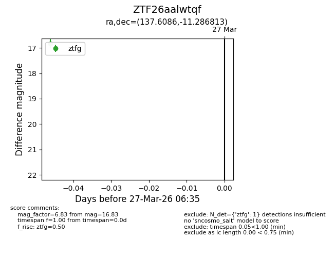
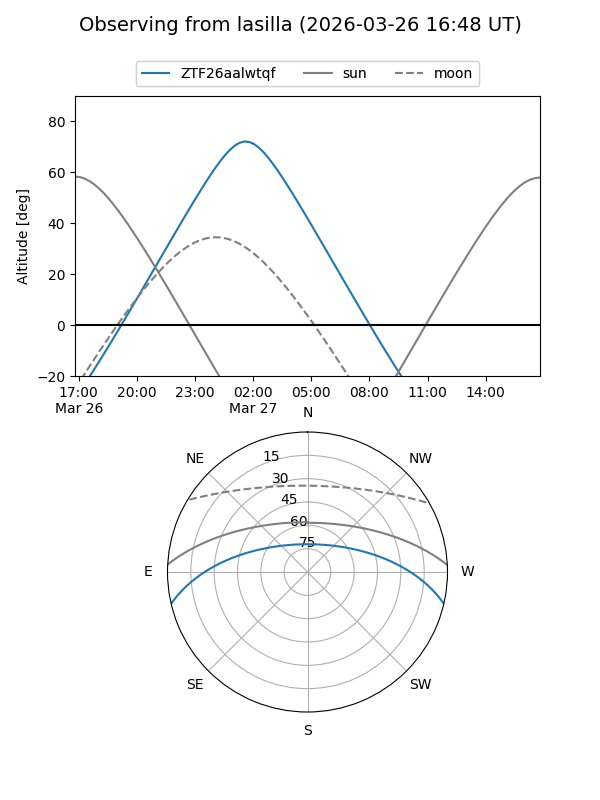
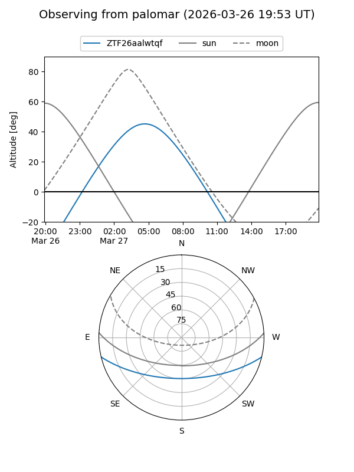

ZTF26aalwtqf
Target ZTF26aalwtqf at 2026-03-27 06:38
Aliases and brokers:
FINK: link
Lasair: link
ALeRCE: link
alt names
ZTF26aalwtqf (ztf,fink_ztf)
Coordinates:
equatorial (ra, dec) = 137.6086,-11.28681
equatorial (HMS+DMS) = 09:10:26.06,-11:17:12.53
galactic (l, b) = (240.9670,+24.09323)
Flags:
Photometry:
last ztfg=16.83
1 ztfg detections
Lightcurve

Visibility


Additional plots